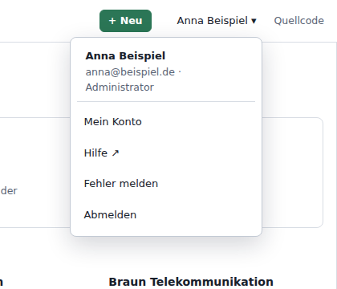
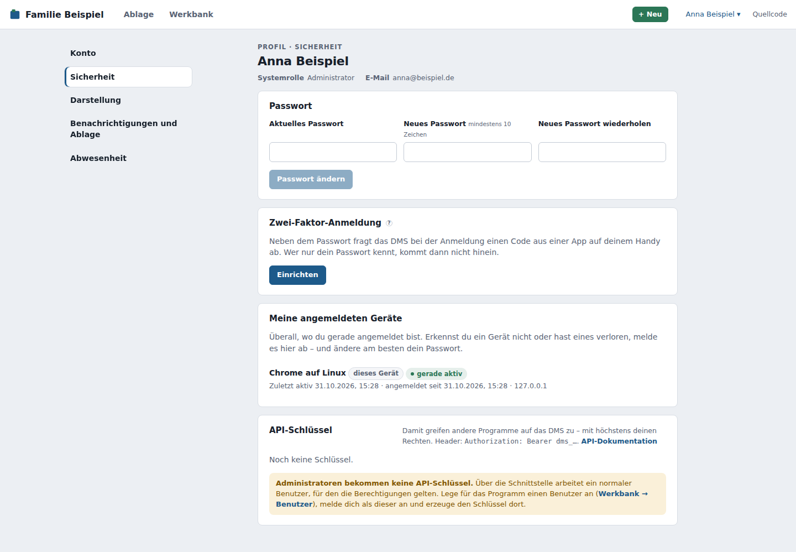
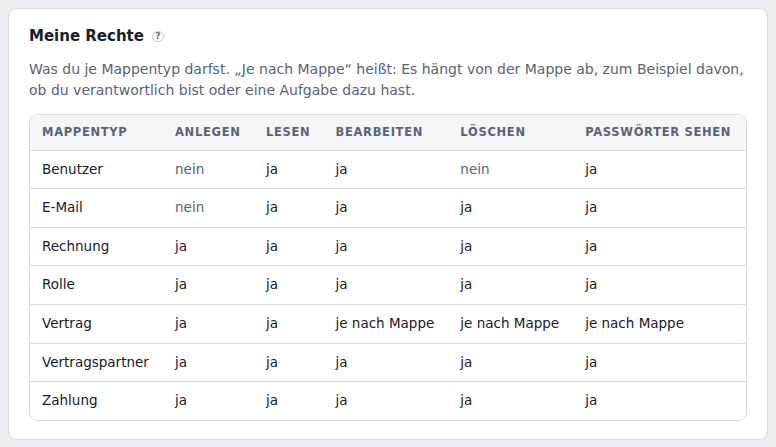
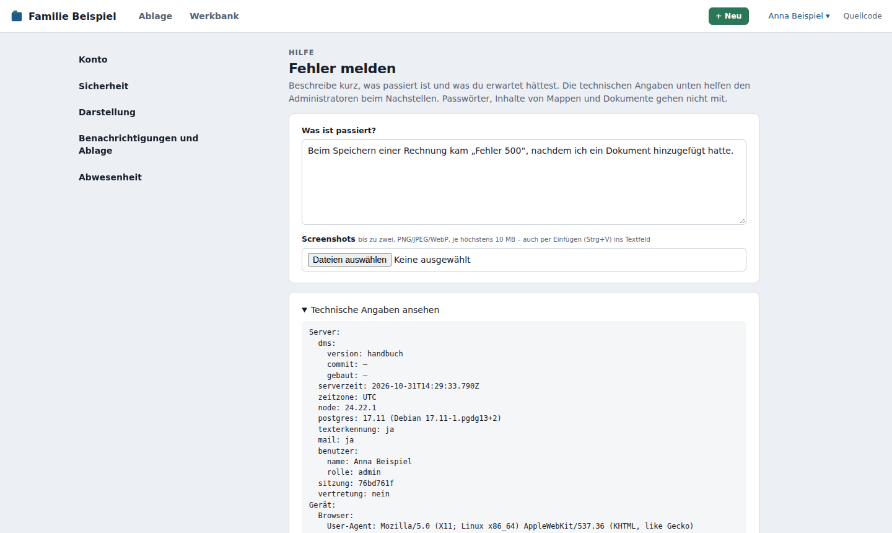

Profil und Einstellungen¶
Das Menü unter deinem Namen¶
Ein Klick auf deinen Namen oben rechts öffnet ein Menü:

- Oben stehen dein Name, deine E-Mail-Adresse und deine Rolle.
- Mein Konto – dein Profil mit allen Bereichen: Konto, Sicherheit, Darstellung (Design, Schriftgröße, Spaltenbreiten), Benachrichtigungen und Ablage, Abwesenheit.
- Solange eine Abwesenheit wirkt, steht oben im Menü „Du bist abwesend“ – ein Klick darauf führt direkt dorthin –, und neben deinem Namen ist ein Punkt.
- Hilfe – öffnet dieses Handbuch.
- Fehler melden – siehe Fehler melden.
- Abmelden.
Profil¶
Das Profil hat links fünf Bereiche (am Smartphone oben als Knöpfe):

Konto¶
- Name – so erscheinst du bei „angelegt von“ und „zuletzt geändert von“ – und als Titel deiner Benutzer-Mappe.
- E-Mail-Adresse – damit meldest du dich an. Zum Ändern brauchst du dein aktuelles Passwort. Verschickt das DMS E-Mails, bekommt die bisherige Adresse einen Hinweis – falls jemand anderes die Adresse geändert hat, merkst du es so.
Meine Daten exportieren¶
Unter Konto → Meine Daten exportieren bekommst du eine Kopie von allem, was du sehen darfst – in offenen Formaten (CSV, JSON, Excel, PDF, die Dokumente im Original) und lesbar ohne das DMS:
- alle Mappen, die du lesen darfst, mit ihren Dokumenten und älteren Versionen,
- deine eigenen Aufgaben, Erinnerungen, Favoriten und was du in den Papierkorb gelegt hast,
- dein eigenes Benutzerkonto (ohne Passwort).
Passwortfelder stehen nur dabei, wenn du sie sehen darfst und das ausdrücklich bestätigst. Der Export läuft im Hintergrund; ist er fertig, lädst du ihn als ZIP herunter. Es gibt immer nur deinen letzten Export – ein neuer ersetzt den alten. Während du als Vertretung arbeitest, geht das nicht. Hat der Administrator den persönlichen Export abgeschaltet, fehlt der Abschnitt.
Meine Rechte¶
Unten im Bereich Konto, unter Name und E-Mail-Adresse, steht, was du je Mappentyp darfst: anlegen, lesen, bearbeiten, löschen und Passwörter sehen – jeweils mit „ja“, „nein“ oder „je nach Mappe“. „Je nach Mappe“ heißt: Es hängt von der einzelnen Mappe ab, zum Beispiel davon, ob du dort verantwortlich bist oder eine Aufgabe dazu hast. Festgelegt werden die Rechte von einem Administrator; mehr unter Was du sehen und ändern darfst.

Sicherheit¶
- Passwort – gib dein aktuelles und zweimal das neue Passwort ein (mindestens 10 Zeichen). Nach dem Ändern sind alle anderen Anmeldungen beendet.
- Zwei-Faktor-Anmeldung – siehe unten.
- Meine angemeldeten Geräte – überall, wo du gerade angemeldet bist, mit Browser, Gerät und letzter Aktivität; dieses Gerät ist markiert. Abmelden beendet eine einzelne Anmeldung, Alle anderen abmelden alle außer dieser – etwa wenn du ein Handy verloren hast. Ändere dann am besten auch dein Passwort.
- API-Schlüssel – damit können andere Programme in deinem Namen auf das DMS zugreifen, etwa ein Scanner. Brauchst du das nicht, kannst du diesen Abschnitt übergehen. Passwortfelder liefert ein Schlüssel nur, wenn du beim Erzeugen Passwörter lesen ankreuzt. Wie das funktioniert, beschreibt das Administratorhandbuch.
Anmelden mit dem Firmenkonto
Steht auf der Anmeldeseite ein Knopf wie Mit Firmenkonto anmelden, meldest du dich darüber mit dem Konto deiner Firma oder deines Anmeldedienstes an. Dein Passwort für das DMS brauchst du dann nicht; Passwort und Abmelden verwaltet der Anbieter.
Zwei-Faktor-Anmeldung¶
Mit der Zwei-Faktor-Anmeldung fragt das DMS nach dem Passwort zusätzlich einen sechsstelligen Code ab, den eine App auf deinem Handy alle 30 Sekunden neu erzeugt. Wer nur dein Passwort kennt, kommt dann nicht hinein.
- Unter Profil → Sicherheit auf Einrichten klicken.
- In einer Authenticator-App (z. B. Google Authenticator, Microsoft Authenticator, Aegis, 2FAS, Bitwarden oder den Passwörtern auf dem iPhone) den QR-Code scannen. Geht das nicht, tippst du den Schlüssel darunter ab.
- Den Code aus der App eingeben und Bestätigen.
- Du bekommst zehn Wiederherstellungscodes. Speichere oder drucke sie und bewahre sie getrennt vom Handy auf – sie werden nur dieses eine Mal angezeigt.
Ab jetzt meldest du dich mit Passwort und Code an. Ist das Handy nicht zur Hand, klickst du bei der Anmeldung auf Wiederherstellungscode verwenden; jeder Code gilt nur einmal. Gehen sie zur Neige, erzeugst du mit Neue Wiederherstellungscodes frische (die alten gelten dann nicht mehr). Abschalten schaltet die Zwei-Faktor-Anmeldung wieder aus; beides bestätigst du mit deinem Passwort.
Auch ein Link zum Zurücksetzen des Passworts fragt danach den Code ab. Handy verloren und keine Codes mehr? Dann setzt ein Administrator die Zwei-Faktor-Anmeldung bei deinem Benutzer zurück.
Vorgeschrieben
Kann ein Administrator für deine Systemrolle (Administrator oder Mitglied) vorschreiben. Dann richtest du sie nach der Anmeldung ein, bevor es weitergeht, und kannst sie nicht selbst abschalten.
Darstellung¶
- Design – wie das DMS für dich aussieht. Standard folgt dem Design, das der Administrator festgelegt hat. Gilt für dein Konto auf allen Geräten.
- Schriftgröße auf diesem Gerät – klein, normal oder groß. Gilt nur für das Gerät, an dem du gerade sitzt; am Smartphone kannst du eine andere Größe wählen als am PC.
- Darstellung auf diesem Gerät – die Breite der Spalten und eingeklappte Bereiche merkt sich jedes Gerät. Ist etwas nicht mehr zu finden, stellt Standard-Darstellung wiederherstellen die ursprüngliche Aufteilung her.
- Entwicklermodus – zeigt unten rechts, wie lange ein Seitenaufruf gedauert hat.
Benachrichtigungen und Ablage¶
- Aufgaben – Mappen mit offenen Aufgaben für dich stehen unter „Zu erledigen“. Zusätzlich schickt das DMS dir einmal am Tag eine Übersicht per E-Mail, solange du welche hast. Tägliche Zusammenfassung meiner Aufgaben per E-Mail bestellt sie ab oder wieder an. Darunter wählst du:
- Uhrzeit – im 15-Minuten-Raster; Standard ist die Uhrzeit, die der Administrator eingestellt hat.
- Wochentage – Standard Montag bis Freitag. Ohne Wochentag kommt keine Zusammenfassung.
- Nicht an Feiertagen – an gesetzlichen Feiertagen des Bundeslands, das der Administrator gewählt hat, kommt keine (Standard: an). Ohne Bundesland ist der Haken ausgegraut.
- Anstehend – wie viele Tage im Voraus die Ansicht Anstehend deine Fristen und Erinnerungen zeigt (Standard: 30).
- Papierkorb – Beim Abmelden leeren löscht deine gelöschten Mappen endgültig, sobald du dich abmeldest. Ohne den Haken bleiben sie so lange im Papierkorb, wie der Administrator es eingestellt hat.
Abwesenheit¶
Damit während deines Urlaubs nichts liegen bleibt, trägst du unter Abwesenheit einen Vertreter ein:
- Abwesend an, Vertreter wählen (Pflicht), optional von und bis (jeweils einschließlich). Ohne Datum gilt die Abwesenheit, bis du sie ausschaltest; mit „bis“ endet sie danach von selbst.
- Solange sie wirkt, gehen neue Aufgaben für dich – von Hand vergebene, Erwähnungen und „passt nicht“ – an deinen Vertreter. In der Historie der Mappe steht „weitergegeben wegen Abwesenheit“. Ist dein Vertreter selbst abwesend, geht sie an dessen Vertreter weiter.
- Alle offenen Aufgaben an ‹Vertreter› geben gibt auch die schon vorhandenen ab. Nach deiner Rückkehr bleiben sie beim Vertreter.
- Dein Vertreter bekommt einen Hinweis unter „Zu erledigen“ („Du wurdest für … als Vertreter hinterlegt“). Abwesende bekommen keine tägliche Zusammenfassung.
- Ein Administrator kann deine Abwesenheit auch für dich eintragen, etwa bei Krankheit. Eintragen, Ändern und Beenden stehen in der Historie deiner Benutzer-Mappe.
Fehler melden¶
Funktioniert etwas nicht, wähle im Menü Fehler melden:

- Beschreibe kurz, was passiert ist und was du erwartet hättest.
- Füge bei Bedarf bis zu zwei Screenshots hinzu (PNG, JPEG oder WebP, je höchstens 10 MB) – auch direkt mit Strg+V ins Textfeld.
- Unter Technische Angaben ansehen steht, was mitgeschickt wird: Version des DMS, Browser und Gerät, Bildschirm- und Fenstergröße, Sprache und Zeitzone, die zuletzt besuchten Seiten (bis zu 25) und die letzten Fehler im Browser (bis zu 10). Passwörter, Inhalte von Mappen und Dokumente gehen nicht mit.
- An die Administratoren senden – oder In die Zwischenablage kopieren, um es z. B. per E-Mail zu schicken.
Die Administratoren sehen deine Meldung in der Werkbank und melden sich, falls sie Fragen haben.
Hinweis „Ein Administrator hat in deinem Namen gearbeitet“¶
Um einen Fehler nachzustellen, kann sich ein Administrator als du anmelden. Er sieht dann genau, was du siehst. Danach zeigt dir das DMS beim nächsten Mal oben einen Hinweis, wer das wann getan hat. Mit Verstanden blendest du ihn aus. Solange er als du arbeitet, steht das auch in deinem Menü und unter Meine angemeldeten Geräte.